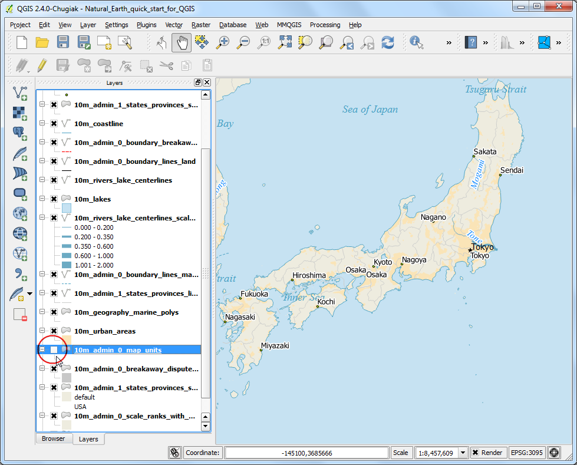
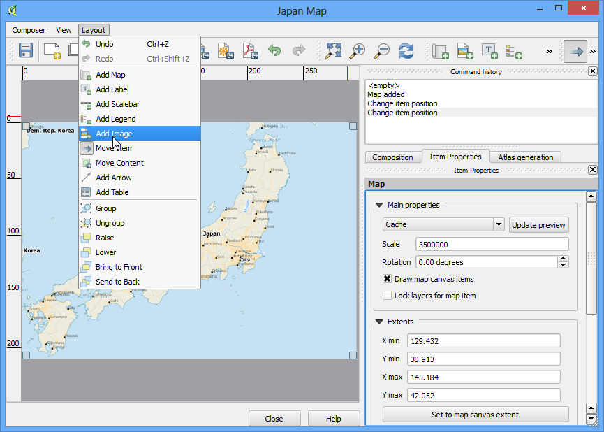
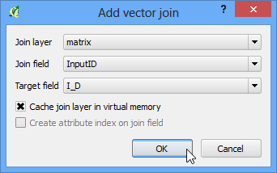

Georeferenziare mappe e carte geografiche raster
[ Download PDF
A4
Letter ]
Molti progetti in ambito GIS richiedono la georeferenziazione di dati di tipo raster. Con il termine georeferenziazione ci si riferisce al processo mediante il quale si assegnano delle coordinate del mondo reale a ciascun pixel del raster. Molte volte queste coordinate si ottengono facendo ricerche sul campo - raccogliendo con dispositivi GPS le coordinate di alcune geometrie facilmente identificabili nell’immagine o nelle carte. In determinati casi, per esempio quando state cercando di trattare carte digitalizzate con lo scanner, potete ottenere le coordinate dalle indicazioni della mappa stessa. Usando queste semplici coordinate o GCPs (Ground Control Points) l’immagine viene deformata e adeguata al sistema di coordinate che abbiamo scelto. In questa esercitazione affronteremo i concetti, le strategie e gli strumenti che, nell’ambito di QGIS permettono di ottenere un’alta accuratezza nella georeferenziazione.
Descrizione del compito
Useremo una carta geografica digitalizzata con lo scanner del sud dell’India nel 1870 e la georeferenzieremo usando QGIS.
Altri aspetti che avremo modo di apprendere nel corso dell’esercizio
Procedimento
Georeferenziare in QGIS significa in molti casi utilizzare il plugin ‘Georeferencer GDAL’. Si tratta di un plugin interno, cioè già residente nella vostra installazione. Dovete soltanto attivarlo. Andate sul menu e attivate il plugin Georeferenziatore Raster GDAL nella scheda Installato . Per una descrizione accurata del funzionamento dei plugin andate sulla pagina Usare i Plugins.

Il plugin è ora installato nel menu Raster. Fate click su per aprire il plugin.

La finestra del plugin è suddivisa in 2 sezioni. La sezione in alto, quella dove il raster verrà visualizzato e quella in basso, dove verrà visualizzata una scheda con il vostro GCP.
Che potrebbe essere tradotto in italiano con “Punto di Controllo al Suolo”. N.d.T.

Ora apriremo la nostra immagine JPG. Andate su . Individuate l’immagine della carta geografica che avete appena salvato e fate click su Apri.

Nella schermata successiva vi verrà chiesto di scegliere il sistema di riferimento delle coordinate (SR). Si tratta di specificare la proiezione e il datum dei vostri punti di controllo. Qualora aveste raccolto i vostri punti usando un dispositivo GPS, sarebbe stato necessario usare un CRS WGS84. Visto che invece state geo-referenziando una carta geografica digitalizzata allo scanner, potete individuare il sistema di riferimento cercandolo nella mappa stessa. Esaminando la nostra immagine vediamo intanto che le coordinate sono in Latidudine/Longitudine. Non sono fornite informazioni specifiche riguardo il datum e dunque toccherà a noi individuarne uno adeguato. Visto che si tratta dell’India e che la mappa è piuttosto antica, possiamo ipotizzare che il datum Everest 1830 sia quello che fa al caso nostro.

A questo punto vedrete l’immagine caricata nella sezione in alto.

Potete utilizzare lo strumento zoom (ingrandisci) e lo strumento pan (sposta) nella barra degli strumenti per esplorare meglio la carta.

Adesso dobbiamo assegnare le coordinate ad alcuni punti di questa mappa. Se ingrandite a sufficienza potrete vedere le coordinate della griglia con i relativi contrassegni. Usando la griglia potete determinare le coordinate X e Y nei punti in cui la griglia fa un’intersezione. Fate click su Aggiungi punto nella barra degli strumenti.

- In the pop-up window, enter the coordinates. Remember that X=longitude and
Y=latitude. Click OK.

Noterete adesso che la tabella GCP ha una riga con i dettagli del vostro primo GCP.

In modo del tutto analogo aggiungete almeno 4 GCPs per coprire l’intera immagine. Tanto più numerosi saranno i punti di controllo al suolo che registrerete tanto più accurata sarà la riproiezione dell’immagine sul sistema di coordinate che abbiamo scelto.

Una volta che avete individuato un numero sufficiente di punti andate su .

Nella finestra di dialogo Impostazioni di trasformazione , scegliete nella casella Tipo di trasformazione il tipo Thin Plate Spline e poi chiamate il vostro raster in uscita con il nome di 1870_southern_india_modified.tif. Scegliete EPSG:4326 come SR di destinazione in modo che l’immagine risultante sia collocata in un datum ampiamente compatibile. Assicuratevi che l’opzione Carica in QGIS una volta eseguito sia spuntata.

Tornate sulla finestra di georeferenziazione, andate su . Questo darà inizio al processo di deformazione dell’immagine usando i punti di controllo al suolo e quindi alla creazione del raster che georeferenziato che volevamo ottenere.

Una volta che il processo è concluso vedrete il layer georeferenziato in QGIS.

La georeferenziazione a questo punto è stata completa. Ma, come sempre, è buona pratica verificare la bontà del nostro lavoro. Come possiamo verificare che la nostra georeferenziazione sia sufficientemente accurata ? In questo caso, possiamo caricare i confini amministrativi del paese da una fonte certa come il dataset di Natural Earth e confrontare con essa i nostri risultati. Noterete che le due mappe si sovrappongono piuttosto bene. Ci sono alcuni errori che potrebbero essere ridotti prendendo un numero maggiore di punti di controllo, cambiando i parametri di trasformazione oppure provando con un diverso tipo di datum.

{kind=link}
{kind=link}